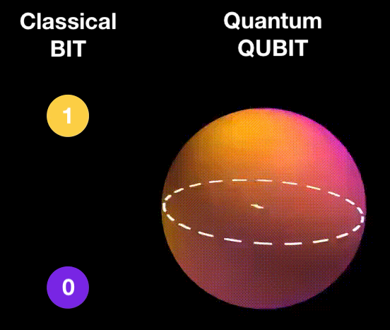
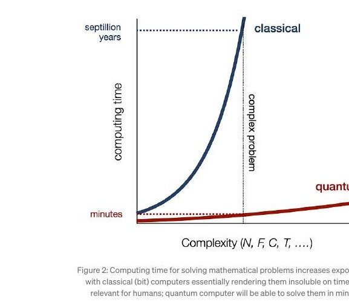
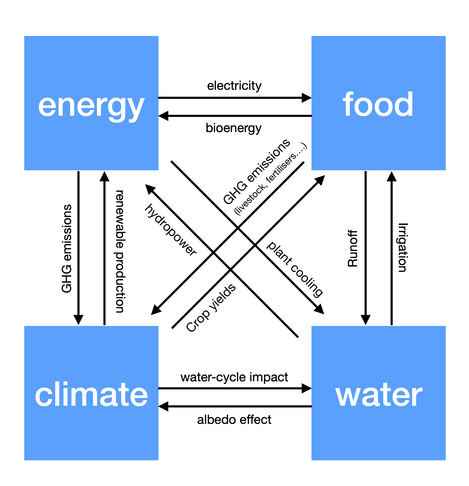

"Why could quantum computers be so powerful and so disruptive?" I have been asked this question, in many derivatives, via phone, email, social networks, messenger services and — believe it or not — text message. The reason for this flood of contacts was the recent breakthrough achieved with Google's Willow chip, documented subsequently in the leading scientific journal Nature1.
Willow's achievements include two groundbreaking milestones: exponentially reducing quantum errors that enable scaling of quantum computers (QCs) and a benchmark computation that broke records. Willow performed a computation in under five minutes that would take one of today's fastest supercomputers 10 septillion — that is a 1 with 25 zeros trailing it — years. That's longer than our universe has been in existence (yes, you read that right and no, I am not mad) while refuelling the discussion on the possibility of a multiverse (yes, you read that right too!).
This mind-blowing computational power of QCs brings not only enormous potential for unlocking today's global challenges but also grave risks. Whoever develops the first scalable and operating QC will achieve quantum supremacy2 — the proof that QCs can solve previously insoluble mathematical problems — and ultimately quantum dominance, the power to shape a tech hegemony. This high-stakes race for quantum dominance is the rationale behind the global tech war currently waged by superpowers. Herein, I will focus on the beneficial potential of QCs and why their intrinsic characteristics are tailor-made for solving today's global challenges such as climate change, energy provision or food security.
The Essentials of Quantum Computing: Superposition, Entanglement, Interference & the Measurement Paradox
We all know that classical computers operate with bits, which are either 0 or 1. Quantum computers (QCs) utilise qubits, which can exist in any linear combination of 0 and 1, a quantum effect known as superposition. Discovered in the early days of quantum mechanics (QM), this allows qubits — e.g. elementary particles — to represent an infinite number of states, mapped on a so-called Bloch sphere. The visualisation below illustrates this: the colours purple and yellow represent the states 0 and 1 (bit) respectively; for the superposition of a qubit (Bloch sphere on the right) the mix of these colours changes based on the qubit's state — represented by the vector.

This illustration visualises the quantum leap in quantum computing: binary options are extended to infinity by superposition, i.e. the linear combination of the two options. This leads to a Bloch Sphere with unlimited possibility — you could say a sea of opportunities.
While a bit can only 'memorise' one state at a time (0 or 1), qubits can 'memorise' an infinite spectrum of possibilities simultaneously. This difference in memory capacity — 2 vs infinity — gives you a glimpse into the power of QCs.
How are qubits manifested in quantum computing chips? The three most common implementations are:
- Superconductors as either current or magnetic flux (IBM, Google, Rigetti, D-Wave).
- Trapped ions (IonQ, Honeywell, Alpine Quantum Technologies).
- Photons (Xanadu, PsiQuantum, QuiX).
The mentioned superposition enables QCs to analyse combinations that a classical computer would check one after the other, all at once. A simple example would be a problem with 4 bits: a classical computer would check all 24 = 16 combinations, while a QC with 4 qubits in superposition can analyse these options simultaneously — already this simple case (1 vs 16) illustrates the acceleration QCs can provide!
Moreover, qubits can become entangled, where they affect each other immediately, no matter the distance. Albert Einstein called this "spooky action at a distance" and it truly is. Two or more elementary particles become linked in such a way that the state of one instantly influences the state of the other, no matter the distance between them — like a pair of magic dice that always show matching results no matter how far apart they are rolled. Entanglement is vital for efficient and immediate information exchange within the QC, adding not only to computational speed but also aiding the processing of interdependent variables.
Lastly, the superposition state persists until measurement, at which the wavefunction (ψ) collapses into a single state; this effect is known as the measurement paradox. QCs harness this by maintaining qubits in superposition, allowing for simultaneous assessments of a multitude of options. Results are then produced by deliberately collapsing the wavefunction through measurement. Here, human ingenuity plays a key role as the collapse isn't inherently selective; Grover's algorithm — which I will address in the following section — manipulates the wavefunction through quantum interference during superposition and makes the optimal solution statistically more likely to emerge upon measurement and collapse.
Thus, quantum computing is enabled not just by these nature-given quantum essentials outlined above but also by human ingenuity — enablers who unlock the boundless potential of these quantum effects.
The Enablers of Quantum Computing: Grover's Algorithm, Quantum Fourier Transformation & Quantum Error Correction
To harness the quantum effects provided by nature, human ingenuity has delivered a suite of innovations. Grover's Algorithm, for instance, optimises search problems exponentially faster than classical methods; in a two-step process it amplifies the probability of the wavefunction corresponding to the optimal solution, ensuring it is dominant upon measurement and collapse. The Quantum Fourier Transformation underpins many QC applications, including cryptographic code-breaking and solving linear equations. A peculiar invention is Shor's algorithm, which leverages the parallelism of quantum superposition to factor numbers — some interpretations suggest it effectively explores the multiverse of possibilities to find the solution.
Perhaps most crucially, quantum error correction addresses the delicate instability of qubits, countering decoherence to maintain superposition and entanglement during computations. These enablers turn the raw potential of quantum effects into practical tools, paving the way for quantum computing to tackle real-world challenges. Transforming quantum potential into reality demands a sophisticated infrastructure — a bridge connecting nature's essentials to human-made enablers.
Quantum Infrastructure: The Bridge Between Essentials and Enablers
QCs are delicate machines; they need to be perfectly shielded from their surroundings to avoid interference. Quantum infrastructure provides this critical environment, bridging the natural phenomena (essentials) and human inventions (enablers). Cryogenic systems maintain near-absolute-zero temperatures to minimise thermal noise, while ultra-high vacuum (UHV) chambers isolate quantum systems from environmental interference. Precision control mechanisms, error-correcting hardware, and measurement systems ensure accurate quantum operations.
Additionally, classical computing and advanced materials support hybrid algorithms and scalable architectures, forming the backbone that transforms theoretical quantum principles into practical, real-world applications. While significant progress has been made, many challenges remain regarding the almost perfect isolation of QC chips from their environment. For short periods of time, like in the case of Willow, quantum computing can now harness its unparalleled potential to tackle the most complex, computationally intensive problems that classical systems cannot handle efficiently.
Google's Willow: A Quantum Computing Milestone
The combination of simultaneous assessment of a sea of possibilities plus the instantaneous communication via entanglement provides unprecedented computational speed. However, up to now it was difficult to scale qubits due to increasing error rates. Google's Willow has now shown that increasing the qubit number can actually reduce the error proneness of QCs, likely bringing forward the entry of QC applications to real-world problems. This will change not only the world of computing, but also the world itself.
Hitherto, computational models — e.g. of energy systems or the climate — utilised many approximations and simplifications because classical computers are insufficient to cope with the complexity of the full model. These practical simplifications diminished the accuracy of these models. The time necessary to solve these ultra-complex problems would be off the timescale reasonable for humans — QCs, however, will get the job done. The figure below illustrates the QC advantage: Willow reduces computing times from septillion years to minutes, let that sink in! Neven's Law — named after Google's Hartmut Neven — states that quantum computing power is growing at a double exponential rate, highlighting the unprecedented pace of this technological revolution. Quantum computing will revolutionise how we analyse and address problems of all stripes.

Computing time for solving mathematical problems increases exponentially with classical (bit) computers, essentially rendering them insoluble on time-scales relevant for humans; quantum computers will be able to solve them in minutes.
While challenges for QC itself remain with the enablers and infrastructure, the potential of the technology is almost boundless. By exploring multiple solutions simultaneously (superposition), handling intricate correlations between variables (entanglement), and pinpointing optimal solutions from a sea of possibilities (interference & measurement paradox), quantum computing is uniquely suited to solving highly complex problems with tightly linked variables. Many of the most pressing global problems such as climate change, energy provision, food & water access and many more are of this interlinked & complex nature. Quantum computing has hence the potential to be the ultimate answer to manifold intertwined global challenges we are facing.
Global Challenges, Their Complexity And Interdependence
Many of the global challenges such as climate change, energy provision as well as access to food & water are highly complex problems, i.e. they depend on a large number of variables. In addition, these problems depend on each other — they are interdependent: energy provision affects the climate while the climate (weather) affects the provision of e.g. renewable energy. As a consequence, developing models to learn about these systems has become more and more complex — something QCs excel at. To exemplify this, let's dive into a few examples from fields I know well:
Decarbonisation of Energy Supply (1): Decarbonisation efforts rely heavily on transitioning to renewable energy sources like solar and wind. A critical challenge within this shift is the need for robust energy storage systems to stabilise grids dominated by intermittent power generation. Storage must address periods of high production, such as sunny or windy days, and supply energy during shortages, like at night or in calm weather. However, determining the optimal scale and distribution of storage systems is a highly complex problem, involving interdependent variables such as fluctuating weather patterns, dynamic grid demands, and the correlation between weather and energy demand (cooling or heating)3.
Classical computing methods struggle to handle this complexity. The exponential growth in variables — thousands of grid nodes with billions of possible configurations — renders traditional optimisation approaches too slow and simplistic to capture nuanced interactions. Simulating real-time scenarios, such as weather-induced demand shifts, can take weeks or months, delaying actionable insights. Quantum computing offers a breakthrough, leveraging superposition to represent all storage configurations simultaneously and entanglement to capture intricate interdependencies. This allows quantum systems to solve optimal deployment strategies exponentially faster, transforming how we tackle the challenges of energy storage in renewable grids.
Feedback Loop in Climate Models (2): Predicting long-term climate changes requires handling intricate feedback loops, where one variable amplifies or dampens others. A prime example is the melting Arctic ice caps. As the ice diminishes, the albedo effect — less sunlight reflected — accelerates warming. This warming, in turn, disrupts ocean currents like the Gulf Stream, triggering shifts in global weather or agricultural patterns4. The cascading impacts highlight the need for highly accurate, interconnected models.
Feedback loops involve nonlinear relationships that classical models approximate poorly, leading to less reliable predictions5,6. To reduce computation time, these models often sacrifice resolution, overlooking critical local details in global simulations. Additionally, simulations for policy intervention are time-intensive, delaying adaptive, real-time strategies7. Quantum computing addresses these hurdles by simulating interdependent variables like temperature, ice cover, and ocean currents through entanglement, while superposition allows for the simultaneous exploration of multiple intervention scenarios. This results in faster, more accurate climate models, empowering proactive decision-making in the face of global warming.
Integrated Global, Multiscale Models — The Holy Grail of Computing (3): Ultimately, QC will enable us to interconnect these highly complex models, unlocking unprecedented benefits. Many years ago, I wrote my Ph.D. thesis8 on multiscale modelling, which included quantum mechanical (QM) calculations of surface reactions, their kinetics, and the flow of reactants and products through a catalyst. Even these relatively simple models required serious computational power from classical high-speed clusters. Dynamically linking holistic models for climate, energy, food supply, and water systems remains an insurmountable challenge for today's most powerful computer architectures.

A highly simplified visualisation of the integration of models in a multi-scale approach, showing the complexity of integrated multi-scale models connecting energy, food, climate, and water systems.
Integrated assessment models (IAMs), often used to guide policymakers, are particularly constrained by these simplifications and should therefore be viewed as approximations9. QC, however, has the potential to dynamically link comprehensive models, allowing researchers to study the interdependence of these critical systems and perform advanced systems analyses without oversimplifying. Even from the simplified visualisation above (Figure 3), it is clear that the computational demand for such an endeavour is immense — far beyond the capabilities of classical computing, but entirely feasible for QC10.
Holistic Assessments, Systems Analysis & Scenario Planning (4): Due to the interconnectedness and interdependence of the relevant systems outlined in the previous sections, improving our understanding of both systems and their interactions will improve our ability to plan them strategically. Consider the optimisation and planning of energy systems: more accurate forecasting of extreme weather events — heat waves or cold snaps that cause spikes in energy demand — will improve our ability to plan and optimise the grid to cope with these strains.
Tools such as systems analysis — initiated by Robert McNamara for defence purposes — and scenario planning are already helping us to understand and plan complex systems. Quantum computers will enable the rapid simulation and systemic analysis of vast, complex systems by processing multiple scenarios simultaneously, revealing subtle interdependencies and potential outcomes — taking the impact of strategic decision-making tools to an entirely new level.
Scientific Breakthroughs (5): Moreover, QCs when combined with AI could create scientific breakthroughs with a global impact: they could make nuclear fusion a reality, create medication or vaccines for hitherto untreatable diseases, solve the riddle of human consciousness, and the list goes on. In our 2022 book Intelligent Decarbonisation11 we discussed the beneficial impact of AI on the decarbonisation of the globalised economy; AI on its own provides a lot, however, when combined with QC, possibilities will be literally boundless.
Another beneficial effect of QCs will be reduced energy requirements; emissions from servers are now a significant contributor to climate change, and QCs will significantly reduce energy requirements — the so-called quantum energy advantage.
Conclusions
Quantum computing heralds a paradigm shift, offering computational power far beyond classical systems. Its unique characteristics — simultaneous exploration of solutions, capturing complex interdependencies, and pinpointing optimal outcomes — are tailor-made for tackling humanity's most intricate challenges from energy & climate security to food & water access.
Moreover, these more detailed models will over time be connected to a global multi-scale model that not only will describe the intricacies of the globalised economic system but also detail the interrelation of natural systems as well as the interaction of these two systems. QCs will — with the help of quantum algorithms and infrastructure — take our comprehension of the world to a whole different level, provide unimaginable insights and support the transition to a more sustainable and equitable future.
Specifically, QCs will likely address the issues with ever increasing carbon emissions from computer systems due to quantum advantage. In short, QC will enable a level of systemic analysis and strategic planning incomprehensible today and it is our duty to utilise this to create a better future.
Quantum computing is going to be the proverbial quantum leap! That's why Google's recent breakthrough with Willow is so important.
Especially the symbiosis of quantum computing with artificial intelligence will — in my opinion — deliver unforeseeable scientific breakthroughs in fields like nuclear fusion, material science, neuroscience and even our understanding of human consciousness, heralding in a new era of scientific discovery. According to Neven's Law, quantum computing is projected to develop at a double exponential rate, forecasting a dramatic evolution in our technological capabilities.
The convergence of quantum mechanics and computing creates extraordinary opportunities but pushes us into a balancing act between innovation and risk. As the global race for quantum dominance intensifies, the stakes grow higher — not just for economic development and the geopolitical balance but for the solutions to global challenges that define our shared future. The mentioned global race, however, has one fringe benefit: investments in the development of quantum computing and artificial intelligence are increasing rapidly. In every war, hot or cold, technological leaps are produced out of necessity — and this is likely to happen in the case of today's frontier technologies, artificial intelligence and quantum computing. It is our duty to utilise these groundbreaking technologies for humanity and Mother Earth while mitigating their risk.
This article is Part 1 of an ongoing series on the quantum computing revolution. The subsequent articles explore the geopolitical and economic dimensions of quantum dominance, and the urgent security implications for the telecommunications industry.
Glossary
- Bit
- The basic unit of classical computing, representing either 0 or 1.
- Bloch Sphere
- A geometric representation of the pure state space of a two-level quantum mechanical system (qubit).
- Cryogenic Systems
- Cooling systems that maintain quantum computers at near-absolute-zero temperatures.
- Decoherence
- The loss of quantum information due to interaction with the environment.
- Entanglement
- A quantum phenomenon where two or more qubits become correlated in such a way that the state of one instantly affects the other, regardless of distance.
- Grover's Algorithm
- A quantum algorithm that provides quadratic speedup for searching unstructured databases.
- Integrated Assessment Models (IAMs)
- Complex models that combine various systems (climate, energy, economic) to guide policy decisions.
- Measurement Paradox
- The phenomenon where measuring a quantum system causes its superposition state to collapse into a definite classical state.
- Neven's Law
- The observation that quantum computing power grows at a double exponential rate.
- Quantum Dominance
- The ability to use quantum computing capabilities to establish technological superiority in various fields.
- Quantum Error Correction
- Techniques to protect quantum information from decoherence and other errors.
- Quantum Fourier Transform
- A fundamental quantum algorithm used in many QC applications, particularly for solving linear equations and cryptography.
- Quantum Supremacy
- The demonstration that a quantum computer can solve a problem that would be practically impossible for classical computers.
- Qubit
- The fundamental unit of quantum computing that can exist in a superposition of states, representing both 0 and 1 simultaneously.
- Shor's Algorithm
- A quantum algorithm that factors large numbers exponentially faster than any known classical algorithm, threatening current encryption.
- Superposition
- A quantum mechanical property that allows qubits to exist in multiple states simultaneously, mapped on a Bloch sphere.